Reputation Management in 2027
Vrajesh Iyengar · Sr. PM, Reputation Management · Round 2 take-home · 5 Nov 2026
Summary

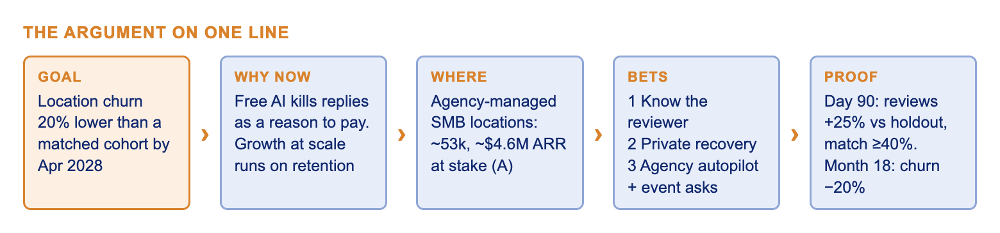
- The goal. For the next 18 months, Reputation Management's job is to keep locations on HighLevel. By April 2028, locations that use it should churn 20% less than a matched group that doesn't. The lead input is genuine reviews per location.
- Why the old game is over. Google now gives AI replies away. Customers leave for Birdeye and Podium over review volume, agency workload, risky replies and reports that don't say what to fix. All four have one root: HighLevel holds the booking, the payment and the CRM, and Reputation uses none of it.
- Where to win. Agency-managed SMB locations: about 53,000 locations and about $4.6M of ARR a year at stake (assumption). One agency decision moves dozens of locations.
- The plan. Ask when the visit ends. Know who wrote each review. Recover bad visits privately. Let agencies approve a policy once instead of every reply.
- The proof comes early. By day 90, a holdout must show a 25% review lift and a 40% match rate on negative reviews, or the plan narrows. The edge is data and distribution competitors can't buy, not features they can copy in a quarter.
How to read the numbers: K = known (the brief or a cited source). A = my assumption, stated so it can be challenged. A map from the brief's seven questions to these sections is in the appendix.
0. The goal
In one line: keep locations on HighLevel longer, with genuine reviews as the first thing we move.
What we're going after. By April 2028, locations actively using Reputation churn 20% less each month than a matched group of locations that don't (for example, 3.0% to 2.4% a month, A), and net active locations keep growing month on month. We get there through one lead input owners can see within weeks: more genuine reviews per location, at least 25% above the old batch-ask approach, proven by a holdout in the first 90 days.
Why this goal, and why now.
- HighLevel is growing at scale. It is profitable, sells mainly through agencies and serves over a million businesses (its own claim). At this stage retention sets the cost of growth: every lost location has to be won again through an agency's sales effort.
- Reputation is a cheap place to win on retention. It's already installed on 89,000 locations (K), so this isn't an adoption problem. But most accounts set it up once and forget it, and customers name it when they leave for Birdeye or Podium.
- The window is now. Free AI replies from Google erase reply quality as a reason to pay. Value has to come from what only HighLevel knows about the customer, and it has to be built before competitors close the gap.
| Level | Metric |
|---|---|
| Outcome (the goal) | Monthly logo churn of locations, against a matched cohort of non-users. Reported as 12-month gross logo retention, plus net revenue retention for agencies |
| Growth outcome | Net active locations, month on month |
| Long-run effect | Higher LTV and lower blended CAC (word of mouth, agency referrals); more locations per account manager, so better agency margins |
| Lead input | Genuine new reviews per active location: about 95 a year today (2.1M a quarter ÷ 89,000 locations, K) |
| Other inputs | Time to first contact on a 3-star-or-lower review; recovery rate; share of locations on event-triggered asks; locations per account manager |
| Guardrails | Platform removals; SMS opt-outs; star mix of asked vs organic reviews; zero patient-data incidents |
1. The market
In one line: the profit pool in standalone review tools is shrinking, and value is moving to whoever owns the customer record and the channel. HighLevel owns both.

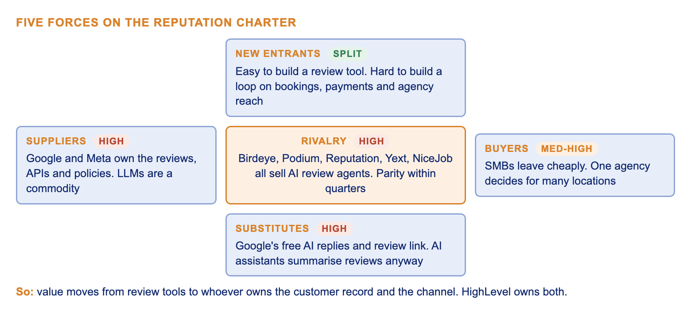
Rivalry and substitutes are high: every serious competitor sells AI review agents, and Google gives replies away. Google and Meta hold real supplier power over the review surface and its APIs. Building a review tool is easy; building a reputation loop on the system of record is not. Full five-forces and SWOT tables are in the appendix.
What has been proven to work
- Asking from the system of record when the job closes. NiceJob does it on Jobber, Housecall Pro and QuickBooks; Podium asks after the visit (K, the brief).
- AI drafting behind approval workflows for agencies and multi-location brands (Birdeye, vendor claim).
- Multi-location analytics win enterprise deals (Reputation, Yext). Specialist tools are seen as deeper than all-in-one suites (G2 comparison).
- Simple, cheap pricing wins trades: NiceJob from $75 a month, month to month (K).
- Not proven yet: AI-search visibility products, and the idea that replies move ratings.
Who uses HighLevel today, split by who runs the reviews: agencies running 10 to 300 client locations; single-location SMBs running their own (dentists, home services, med spas, restaurants); and multi-location groups of 5 to 200 offices with a regional manager (K, the brief). Agency blogs name home services and medical aesthetics as the strongest niches (anecdotal, A).
Existing market or a new one?
| Option | Verdict |
|---|---|
| New offering for existing users | The main thrust. The goal is retention, and the data edge exists only where HighLevel is the system of record |
| Multi-location groups (dental groups, franchises) reached through agencies | From month 12. Best use-case fit, but needs matched data and multi-location reporting first |
| A standalone product for SMBs on other booking systems | No. Without our own data it is NiceJob or Birdeye on their home ground |
Network effects, multi-homing and barriers
- Network effects are weak, and we won't claim strong ones. The review network belongs to Google. We do get a data effect: every confirmed match and recovery outcome improves timing, matching and triage for other locations in the same vertical. And snapshots give an indirect effect: more agencies, more ready-made vertical playbooks.
- Multi-homing is our biggest exposure. An SMB can keep HighLevel as its CRM and use Birdeye for reviews, because leaving costs nothing: the reviews sit on Google. So we raise the cost of moving the loop, not the reviews: asks tied to bookings, a history of matched reviews, agency policies, recovery wired into Conversations.
- Barriers to entry are low for a review tool and high for this. An entrant would need real-time booking and payment data, agency distribution, Google API access at scale, a HIPAA agreement and A2P 10DLC registration.
The moat: data, but joined and used. Holding data is not a moat by itself; competitors can integrate with booking systems, and customers own their data. The moat is three things together:
- Joined first-party data in real time. Booking, payment, CRM, messages and calls in one product, so every step can be personal: who to ask and when, the channel each customer answers on, a reply that knows the visit, recovery tiered by customer value, staff-level insight, which happy customers to invite to refer.
- A compounding dataset. Matched reviews and recovery outcomes accumulate, and no competitor can buy that history.
- Distribution and workflow lock-in. Agencies spread it through snapshots, and the loop runs inside Workflows and Conversations.
A competitor can copy any single feature in a quarter. It can't copy owning the appointment.
1b. Trends we're building on
In one line: discovery is moving to AI answers built on recent reviews, voice and SMS agents are cheap enough to follow up with every customer who matters, and regulators punish shortcuts.
| Trend | The data | Evidence | What it means for us |
|---|---|---|---|
| AI is the new front door | 45% of consumers used AI for local recommendations in 2026, up from 6%; ChatGPT 31%; 88% check the reviews it cites (BrightLocal 2026) | Strong | Win through recent, specific review content, not a visibility dashboard |
| Recency beats volume | 74% only weigh reviews from the last 3 months; 47% avoid businesses with fewer than 20 (BrightLocal 2026, secondary) | Medium | A steady flow beats a blast: event-triggered asks by default |
| Voice AI goes mainstream | Market about $2.5B in 2025, growing about 39% a year (Grand View). Gartner: agentic AI resolves 80% of common service issues by 2029, about 30% lower cost. Reminder calls halved primary-care no-shows, 20.8% to 10.3% over 135k appointments (secondary). An AI call costs about $0.40 vs $7 to $12 for a human (vendor) | Forecast, study, vendor | AI follow-up is affordable at Medium-tier volume, and HighLevel already sells Voice AI. Gartner also finds only about 20% of chatbot projects fully meet expectations, so autonomy is earned and High stakes stay human |
| SMB AI adoption climbing | 22% (2024) to 38% (2026) (Demandsage, secondary) | Medium | Owners are ready to let an agent handle asks and positive replies |
| Ask fast, by SMS | Asks within 24 hours get about 3x the response of a week later; SMS beats email by about 33% (vendor data) | Directional | Ask on the completion event, SMS first, within quiet hours |
| Enforcement tightening | FTC review rule since 21 Oct 2024; FCC: AI voices are "artificial" under TCPA (Feb 2024); HHS fines for patient details in replies (K) | Strong | Compliance is a product feature. Fake-review detection gains value |
| Platforms give basics away | Google tests "Reply with AI" since March 2026 (K) | Strong | Replies are a commodity; invest in the context around them |
| Recovery works once, not on repeat | A good recovery after one failure can lift loyalty, not after two (Maxham and Netemeyer 2002); satisfied complainers show the highest repurchase intent (15-country EU survey) | Mixed | Recover fast and privately; measure by rebooking, not review edits; flag repeat failures as an ops problem |
| Ratings move revenue | One more star brings independent restaurants 5% to 9% more revenue (Luca, HBS 2011) | Strong but old | Volume and rating both pay. We prove our own effect with holdouts |
2. Customer needs: what's unmet
In one line: competitors solve these needs with AI that reads the review text, borrowed integrations and dashboards. Nobody uses first-party, joined customer data, and that is where every gap sits.
| User | Need | Data | How the market solves it today | Status |
|---|---|---|---|---|
| SMB owner | A steady flow of fresh reviews without effort | 74% weigh only the last 3 months; average HighLevel location gets about 7.9 a month (K) | Ask at the moment, by SMS (NiceJob, Podium via integrations; Birdeye's agent) | Underserved: HighLevel sends batch blasts despite owning the event |
| SMB owner | Hear about a bad visit in time and fix it privately | 89% expect a response; 42% avoid businesses that ignore reviews; one star is worth 5% to 9% of revenue | Alert and reply in public; no one links the review to the visit | Underserved |
| SMB owner | Replies that are safe and sound like the business | 50% avoid businesses with templated replies; HHS fined dental practices $10k and $23k | Brand-voice drafting from the review text (Google free, Birdeye, Podium) | Drafting served; grounding and safety underserved |
| Agency AM | Run more locations per AM without quality dropping | Margins depend on locations per AM; volume grows, teams don't (K) | Per-reply approval workflows and bulk tools | Underserved: nobody offers "approve a policy once" |
| Agency AM | Prove value to the client | Clients judge agencies on results (A) | White-label star reports | Underserved |
| Regional manager | Know what to fix, and where | "Stars, not what to fix" is a named churn reason (K) | Text analytics at enterprise prices; no link to staff or visit | Underserved in mid-market |
| Regional manager | What a rating is worth in revenue | HighLevel holds the bookings (K) | Claims, not measurement | Unmet |
| All | Show up in AI answers | 45% use AI for local search; 88% check cited reviews | Visibility dashboards and listing audits | Underserved: the lever is review content |
| All | Protection from fake reviews | FTC rule in force; platforms enforce harder (K) | Manual flagging | Underserved: "no matching customer" is a signal only we have |
2b. Sizing the segments, and where to win
In one line: agency-managed SMB locations hold the most value at stake and fit the moat best. Self-serve rides along; multi-location groups come at month 12.
Method: value at stake = locations × churn removed per year × annual revenue per location. A 20% relative churn cut removes about monthly churn × 20% × 12 a year. HighLevel doesn't publish its split, churn or revenue per location, so those are assumptions, replaced with internal data in week 1: a 60 / 25 / 15 split of the 89,000 locations, and about $100 a month of platform revenue per location (anchored on AI Employee at $50 to $97 per sub-account, third-party). Context: the reputation software market is about $4.4B to $6.5B (2025), growing 9% to 14% a year (analyst mid-range).

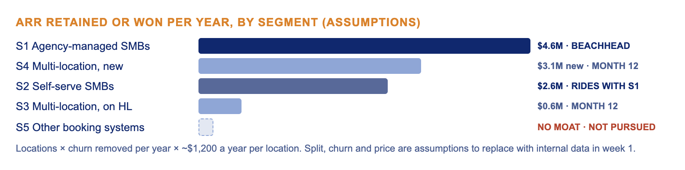
| Segment | Locations | Monthly churn (A) | Retained ARR a year | Moat fit | Effort | Verdict |
|---|---|---|---|---|---|---|
| S1. Agency-managed SMB locations | about 53,400 | 3.0% | about $4.6M | High | Medium | Beachhead |
| S2. Self-serve single locations | about 22,250 | 4.0% | about $2.6M | High | Low on top of S1 | Rides with S1 |
| S3. Multi-location groups on HighLevel | about 13,350 | 1.5% | about $0.6M | High | Medium | Month 12 |
| S4. Multi-location groups not on HighLevel | about 2,550 won of about 128k reachable (from 851k US franchise units, IFA) | n/a | about $3.1M new | Medium | High | Month 12 expansion |
| S5. SMBs on other booking systems | Largest raw market | n/a | Unknown | Low | High | No |
Arithmetic check: 53,400 × (3.0% × 20% × 12 = 7.2%) = 3,845 locations × $1,200 = $4.61M.
Why S1. It has the most value at stake; one agency moves dozens of locations, so reach costs least here; and HighLevel holds these locations' bookings and payments. What would change the pick: if week-1 data shows self-serve SMBs are most of the base or churn far faster, S2 leads, and the first surface becomes the owner's phone rather than the agency queue. The features stay the same.
3. The big bets
In one line: three bets move retention for agency-managed locations and stay hard to copy, because each runs on data or distribution only HighLevel has. Event-triggered asks are table stakes, not a bet.

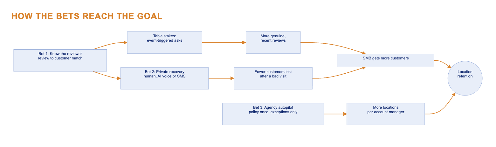
| Bet 1: Know the reviewer | Bet 2: Private recovery | Bet 3: Agency autopilot | |
|---|---|---|---|
| What it is | Match every review to a contact, a visit and a staff member: CRM first, then a keyword the reviewer can text in, then a platform DM | Unhappy customers get a call or a text, not only a public reply. A human for High stakes, AI voice or SMS for Medium | The client approves a reply policy once; the AM sees one queue of exceptions across all clients |
| Need it answers | Safe, grounded replies; fake-review detection; what to fix | Fix bad visits in time | More locations per AM |
| Evidence | HHS fines for unsafe replies; 50% avoid templated replies | AI calls about $0.40 vs $7 to $12; recovery after one failure lifts loyalty | Margins depend on locations per AM (K) |
| Why it's hard to copy | Needs real-time first-party bookings and payments | Needs Bet 1 plus Voice AI and Conversations in one product | Needs agency distribution through snapshots |
| Moves | Match rate, and everything downstream | Time to first contact; recovered customers who rebook | Locations per AM |

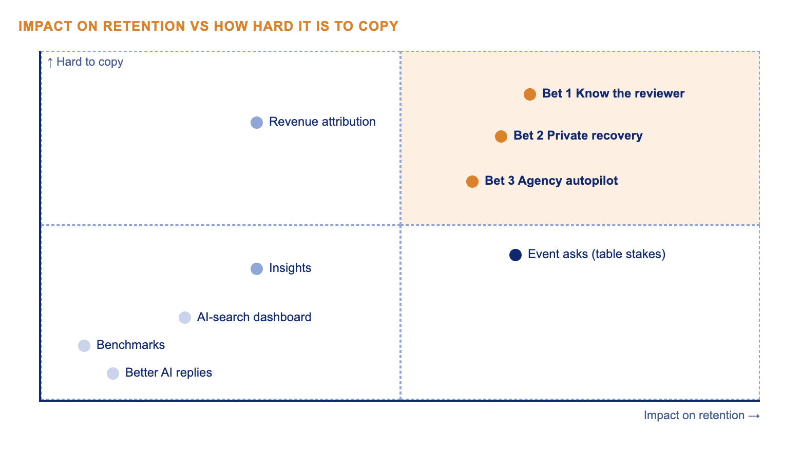
Better AI replies are given away by Google. An AI-search dashboard measures the problem without fixing it. Benchmarks change no decision. Revenue attribution is defensible but proves value rather than creating it, so it ships at month 12 as the proof.
4. The pillars, ranked by ICE
In one line: ICE puts asks, autopilot, recovery and matching on top, and AI replies near the bottom. Matching ships first anyway, because the next two depend on it.
Impact = effect on location retention in S1. Confidence = strength of evidence. Ease = what 8 engineers can ship in 18 months, given dependencies. Each scored 1 to 10; ICE = I × C × E.

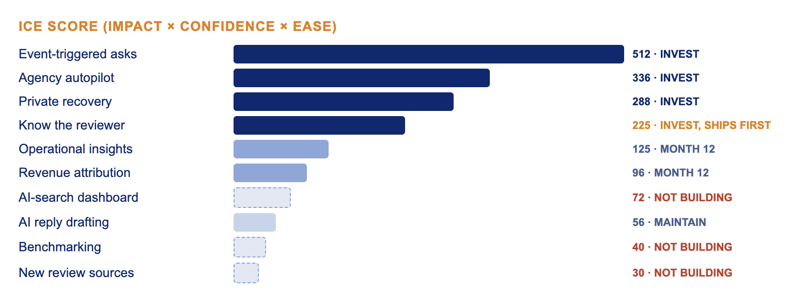
| Pillar | I | C | E | Why |
|---|---|---|---|---|
| Event-triggered asks | 8 | 8 | 8 | Volume is churn reason one; recency rules; proven by NiceJob and Podium; events already live in HighLevel |
| Agency autopilot | 8 | 7 | 6 | Agency margin depends on locations per AM; named churn reason; policy engine and queue are design-heavy |
| Private recovery | 8 | 6 | 6 | A star is worth 5% to 9% of revenue; voice cost data is vendor, recovery research mixed; Voice AI exists, consent flows are new |
| Know the reviewer | 9 | 5 | 5 | Unlocks recovery, safe replies, insights, attribution and fake detection; match rate unknown; fuzzy matching and privacy review |
| Operational insights | 5 | 5 | 5 | At 7.9 reviews a month a single location has too little data; needs matched history |
| Revenue attribution | 6 | 4 | 4 | Proves value but creates none; holdouts are noisy at low volume |
| AI-search dashboard | 4 | 3 | 6 | Fresh content moves AI answers; a dashboard doesn't; vendor claims only |
| AI reply drafting | 1 | 8 | 7 | Google gives it away; keep it grounded and safe, nothing more |
| Benchmarking | 2 | 4 | 5 | Comparing a med spa to a vertical average changes no decision |
| New review sources | 2 | 5 | 3 | Google and Facebook cover most of the base (A); Yelp has no reply API |

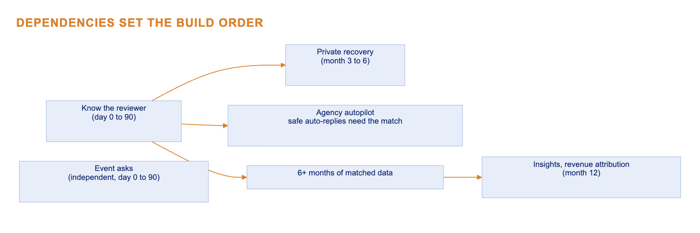
AI replies, benchmarks and new sources are easy and some are well proven. They rank low because none of them changes whether a location stays.
5. Where we're going
In one line: Reputation becomes a loop on HighLevel's customer data that asks at the right moment, knows who reviewed, recovers bad visits privately and shows the result. People handle only the exceptions.

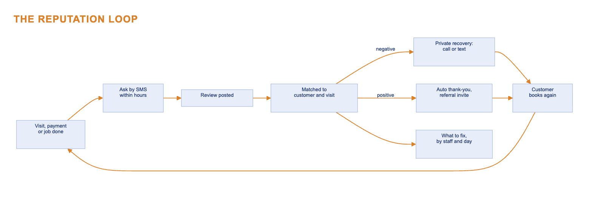
| Today | 2027 | Metric that moves | |
|---|---|---|---|
| Agency, 80 locations | Drafts replies and chases client approval one by one | The client approves a policy once; the AM clears one exception queue across clients; the client report writes itself | Locations per AM |
| Single dentist | Set up once, forgotten; a monthly blast | An ask after checkout; 4 and 5-star replies post on their own with no patient details; a 1 to 3-star reaches the dentist's phone with the visit and a one-tap callback | Reviews per month; time to first contact |
| Regional manager, 40 offices | Average stars per office | Themes per office and staff member, and an alert when something shifts ("wait-time complaints up at #17 since the rota change") | Fixes made; repeat complaints |

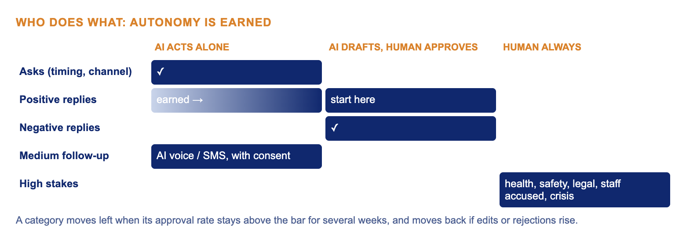
A category moves to AI-alone once its approval rate stays above the bar for several weeks, and moves back if edits or rejections rise. I used the same gate on an LLM agent-assist tool at Amazon, where acceptance rate (87%) decided when drafts could be trusted.
| Rival | Why we win |
|---|---|
| Google (free) | It drafts from the review text alone; it doesn't know the visit and can't call the customer back |
| Birdeye and Podium | They borrow context through integrations; HighLevel is the booking system, and agencies spread it through snapshots |
| Reputation and Yext | Priced for enterprise; we reach multi-location groups through agencies from month 12 |
6. How it works
In one line: an agent acts only where a mistake is cheap and reversible; everywhere else the AI drafts and a person decides.
| Mode | What it does | Surfaces |
|---|---|---|
| Assistant | You ask, it answers from your data | Regional manager: "Why did ratings drop in Pune?" |
| Copilot | It drafts, you decide | Negative replies; the recovery brief; the agency exception queue |
| Agent | It acts under a policy and reports back | Asks; positive replies once earned; matching; Medium follow-up; fake-review evidence packs |
The two surfaces, on the same five lenses
| Lens | A. Ask timing and channel (agent) | B. Negative-review recovery (copilot with agent steps) |
|---|---|---|
| Interaction model | Switched on once (toggle or snapshot); runs without anyone; a weekly line: "42 asks, 11 reviews, SMS within 2h works best" | A card on the owner's phone or in the agency queue: the review, who wrote it, the tier, one action ("Call Priya, brief ready") |
| What the AI knows | Visit done, paid, staff, service; open complaints; consent and quiet hours; past asks; the channel this person replies on | The review; the matched customer, visit, spend and history; open threads; the reply policy; the vertical (healthcare means no patient details) |
| What it shows | Asks sent, reviews won, and asks held back with the reason ("open complaint", "no SMS consent") | Triage tier, match confidence, the call brief, a closing public line |
| How the user corrects it | "Never after 7pm", "skip root canals", exclude a contact; each correction becomes a rule | "Not this person" retrains the matcher; "change tier"; edits feed the autonomy gate |
| When it's wrong | Asks someone mid-complaint, a 1-star follows and flows to recovery; opt-outs above 1% (A) pause asks for that business | A wrong match is avoided by contacting only on high confidence, and the script says "your visit", never "your review"; health, safety and legal words force High |

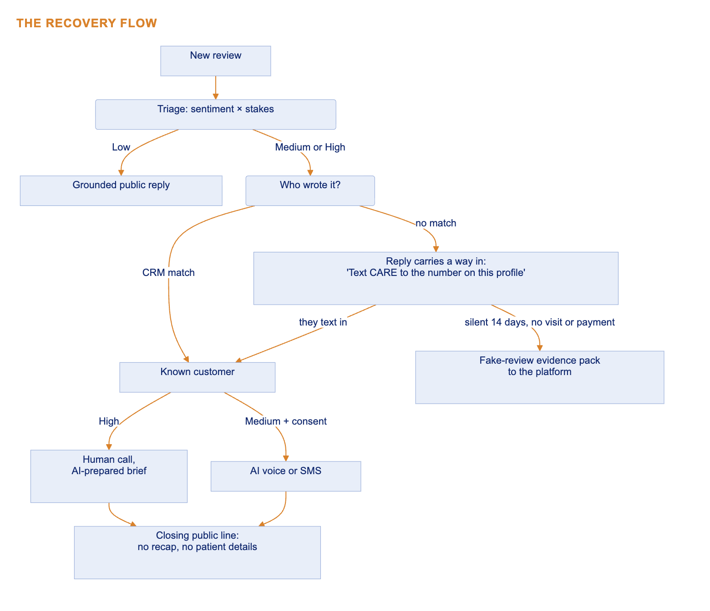
Compliance is built in. Predicted sentiment never decides who gets asked (that is review gating). AI calls go only to customers who consented (FCC 2024). Rewards attach to referrals or service fixes, never to a review (Google policy, FTC 16 CFR 465).
The prototype walks through one bad visit, start to finish, in seven steps: the ask, triage, the match, private recovery, the loop closing, the agency queue, and the outcome. Live link: open the prototype

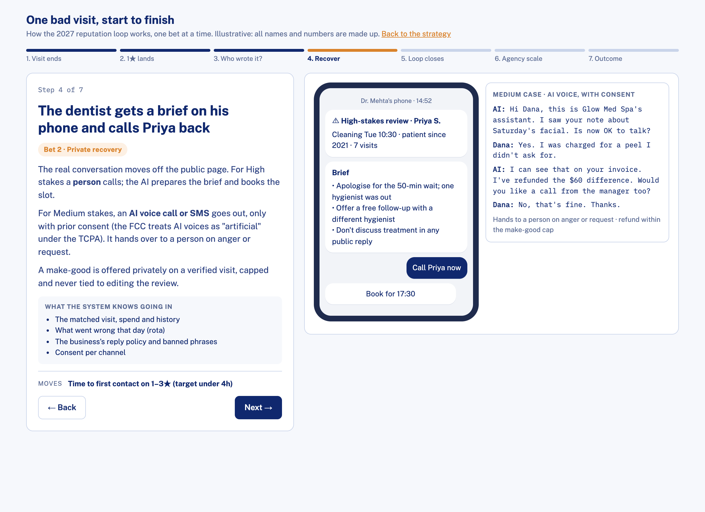

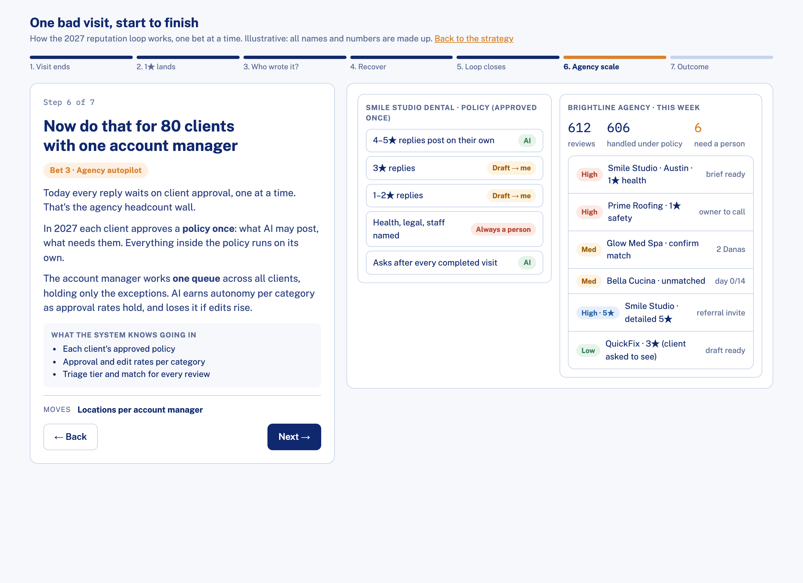
Where AI is a gimmick: sentiment word clouds; a chatbot for a location with 8 reviews a month; an "AI-search score" we can neither move directly nor measure well; AI writing the public account of a private call.
7. How we get there
In one line: two pods, four stage gates, each one proving something before the next starts, with a kill line at day 90.
Team (A): two pods of 4 engineers; the designer leans to Pod 2 from month 3; the shared data scientist owns evaluation sets and holdouts. Workflows, Conversations and Voice AI are dependencies, each with a named partner engineer agreed in month 1.

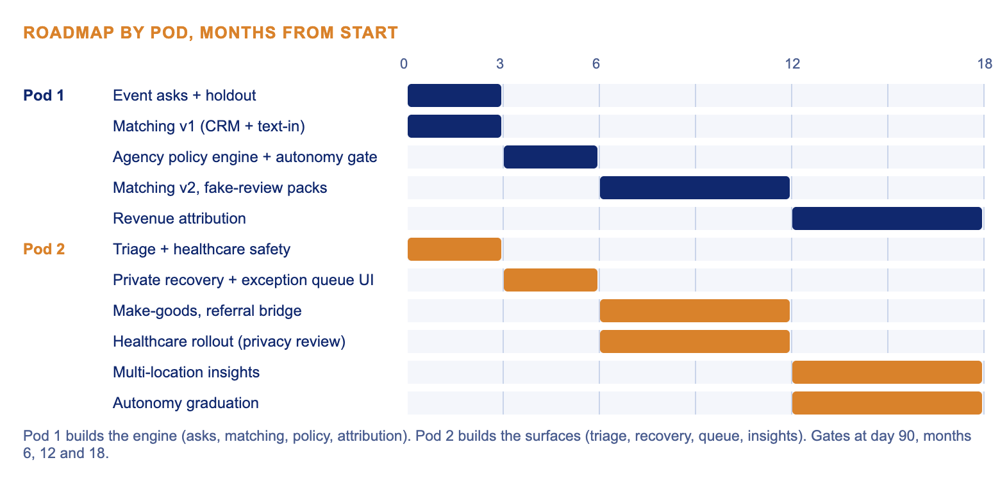
| Stage | Ships | Gate before the next stage |
|---|---|---|
| 0 to 90 days | Event asks (default for new setups), matching v1, triage and safety mode | Reviews per location at least 25% above the batch holdout; match rate on negatives at least 40% |
| 6 months | Private recovery (Pod 2); agency policy engine and autonomy gate (Pod 1) with the exception queue on top (Pod 2); existing accounts moved off batch asks | Median time to first contact under 4 hours (A); locations per AM up at design partners; zero patient-data incidents |
| 12 months | Matching v2 and fake-review packs (Pod 1); make-goods and referral bridge, healthcare rollout after privacy review (Pod 2); multi-location expansion starts | Recovered customers rebook above holdout; first read on location churn |
| 18 months | Revenue attribution in client reports (Pod 1); multi-location insights and autonomy graduation (Pod 2) | Location churn 20% below the cohort; autonomy up with a flat error rate |
Kill line. If the match rate is under 40% at day 90, recovery runs only for matched reviews, the text-in copy is reworked, and Pod 1 moves to agency autopilot.
| 90 days | 6 months | 12 months | 18 months | |
|---|---|---|---|---|
| Agency AM | Asks run on their own | Policy once, one queue | Fake-review packs | Client report shows revenue impact |
| Single dentist | Asks after checkout; safe auto-replies | One-tap recovery on the phone | Auto-replies graduate by category | |
| Regional manager | Expansion to new multi-location groups starts | Themes, staff alerts, light benchmarks |
Not building: listings management (Yext's lane); an AI-search dashboard; new review sources; any reward tied to a review; more reply-quality work beyond grounding and safety.
Retiring: the batch blast as the default (still available; existing accounts nudged with their own holdout results), and per-reply client approval, replaced by a policy plus exceptions. Some agencies will resist, because approval is how they show work; the auto-written client report answers that.
Trade-offs: the regional manager waits until months 12 to 18 for insights, because a dentist saving a patient in month 6 matters more. AI voice stops at Medium. Healthcare gets matching and recovery last (months 6 to 12) because of privacy review. Pod 1 builds the engine (asks, matching, policy, attribution) and Pod 2 the surfaces (triage, recovery, queue, insights), so neither sits idle; Pod 1's months 3 to 6 are also the slot it pivots into if matching misses the day-90 kill line.
8. How we'll know
In one line: one outcome (location churn), three drivers, and guardrails that catch gating, spam and privacy slips.

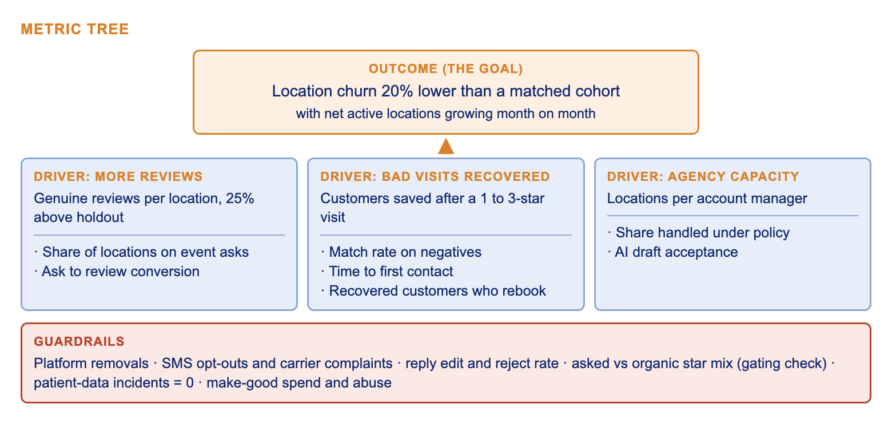
| Area | Metric | Measurable? |
|---|---|---|
| Adoption | Share of locations with event asks on | Yes |
| Activation | Share of new locations sending a first ask within 7 days | Yes |
| Engagement | Queue items cleared per AM per week; owner actions on recovery cards | Yes |
| Retention | Location churn vs matched cohort (the goal); agency NRR | Yes, billing data |
| Revenue | Reviews AI attach rate; referrals from invited reviewers | Yes |
| AI usage | Autonomy share by category; draft acceptance; AI calls completed | Yes |
| More reviews | Genuine reviews per location (still up after 90 days) | Yes |
| Better ratings | Rolling 90-day rating, tracked but never targeted (targeting stars invites gating) | Yes, slow |
| Faster recovery | Time to first contact; recovered customers who rebook | Yes |
| More bookings | Booking lift vs holdout | Only through holdouts |
| AI-search visibility | Sampled prompts per vertical | Barely; a spot check, never a KPI |
Guardrails: platform removals; SMS opt-outs and carrier complaints; reply edit and reject rate; patient-data incidents at zero; asked reviews rated far above organic ones (the sign of gating); make-good abuse.
9. What has to be true
In one line: six assumptions, each with a test, a date and a fallback.
| # | It has to be true that | Test | When | If it fails |
|---|---|---|---|---|
| 1 | Event asks beat batch asks | Holdout: 10% of events get the old batch ask | Day 90 | Reset the review target; keep event asks only where they win |
| 2 | We can identify who wrote most negative reviews | Match rate, CRM plus text-in | Day 90 | Under 40%: recovery for matched reviews only; Pod 1 moves to autopilot |
| 3 | Google and Meta allow a text-in line in replies | Partnerships confirms; watch held replies | Month 2 | Use the listing's own phone number |
| 4 | Recovered customers come back | Rebook rate vs customers not contacted | Month 9 | Shrink recovery to High stakes |
| 5 | Agencies trust a policy over per-reply approval | Locations per AM and error rate at design partners | Month 6 | Keep per-reply approval where they won't let go |
| 6 | Better reviews keep locations | Churn vs matched cohort | Month 12 read, month 18 goal | Re-examine the chain |
| Risk | Mitigation |
|---|---|
| Wrong person contacted | Contact only on high confidence; below it a human confirms; script says "your visit" |
| Patient data in a reply | A fixed filter after the AI; generic lines in healthcare; human approval on High |
| Review gating creeps in | Sentiment never decides who is asked; audit asked vs organic star mix |
| Angry reviews to farm discounts | Make-goods only for verified visits, capped, fraud-scored, human-reviewed, never tied to editing a review |
| Platform API or policy change | Google and Facebook only; queued posting with retries; Partnerships owns the relationship |
| A competitor ships the same features | Expected; the edge is the data and the channel |
10. Making it real
| Constraint | What it means for the design |
|---|---|
| AI cost | Drafts cost under $0.01 each (A): under about $21k a quarter for all 2.1M reviews. About 126k AI calls a quarter at about $0.40 is about $50k (A: 12% of reviews are Medium, half go to voice). So AI voice stops at Medium |
| Platform APIs | Google Business Profile quotas mean queued posts, retries and a check of what went live; Facebook via Graph API; Yelp has no reply API |
| SMS rules | A2P 10DLC numbers; consent stored per channel; quiet hours are hard limits; asks pause above 1% opt-outs |
| Privacy | Healthcare mode: filter after the AI, generic lines, human approval on High, a BAA where we store patient data (Legal to confirm) |
| Observability | Sync lag, failed posts, match rate by vertical, triage recall on High, autonomy error rate |
| Who | Role |
|---|---|
| Engineering | Two pods with clear lanes; partner engineers on Workflows, Conversations and Voice AI |
| Design | One designer, mostly on the queue and the recovery card |
| Agencies | 10 design partners, about 500 locations (A), run every stage first; their numbers become the sales story |
| Marketing and Sales | Sell through snapshots and SaaS mode; lead with "more reviews, fewer hours" |
| Support | Owns the guardrail dashboard and can pause a feature |
| Partnerships | Owns Google and Meta; confirms the text-in line before scale |
| Legal | Signs off consent flows, rewards policy and healthcare mode before each stage |
| Leadership | Quarterly gate review against section 7 |
Appendix
A1. Where each brief question is answered
| Brief question | Section |
|---|---|
| Q1 Vision, the three accounts, human/AI line, why it wins | 5 (and 1 for the competitive frame) |
| Q2 Pillars ranked, top and bottom | 4 |
| Q3 AI-native experience, two surfaces, gimmicks | 6 |
| Q4 Defensibility: real vs board deck | 1 (the moat) and 3 |
| Q5 Roadmap: 90 days to 18 months, cuts, retirements | 7 |
| Q6 Metrics: north star, inputs, guardrails, instrumentation | 0 and 8 |
| Q7 One big bet | 3 (Bet 1 is the foundation) and 9 |
| Technical and alignment | 10 |
A2. Five forces
| Force | Strength | Why |
|---|---|---|
| Rivalry | High | Birdeye, Podium, Reputation, Yext and NiceJob all sell AI review agents; parity within quarters |
| Substitutes | High | Google's free AI replies and review link; doing nothing; AI assistants summarising reviews anyway |
| Buyer power | Medium-high | SMBs are price-sensitive and leaving costs them little; agencies decide the stack for many locations |
| Supplier power | High | Google and Meta own the surface, APIs and policies; LLMs are a commodity; carriers set SMS rules |
| New entrants | Split | Easy for a review tool; hard for a loop on the system of record |
A3. SWOT
| Strengths | Weaknesses |
|---|---|
| System of record: bookings, payments, CRM, SMS and email, Voice AI. Agency distribution (snapshots, SaaS mode, AI Employee resale). Installed on 89k locations. Workflow depth | Set-and-forget usage; batch asks; per-reply approval; ungrounded AI replies; star-only reports; seen as a module, not a specialist; Google and Facebook only |
| Opportunities | Threats |
| Event asks; customer-linked reviews; agency exception queue; safe mode for regulated verticals; fake-review detection; referral bridge into Marketing OS | Free AI from Google; competitors' AI agents; platform API and policy changes; FTC and TCPA liability; multi-homing |
A4. Assumptions register
| Assumption | Value | Where used | How it gets replaced |
|---|---|---|---|
| Illustrative monthly churn | 3.0% (S1), 4.0% (S2), 1.5% (S3) | 0, 2b | Billing data, week 1 |
| Location split | 60 / 25 / 15 | 2b | Account data, week 1 |
| Revenue per location | about $100 a month | 2b | Finance, week 1 |
| Target churn cut | 20% relative | 0, 7 | Fixed goal; baseline re-measured |
| Review lift gate | at least 25% vs holdout | 0, 7, 9 | Holdout, day 90 |
| Match-rate kill line | 40% of negatives | 7, 9 | Day 90 |
| Medium and High shares | about 12% and 3% of reviews | 10 | Triage eval set |
| Costs | under $0.01 per draft; about $0.40 per AI call | 10 | Vendor quotes |
| Design partners | 10 agencies, about 500 locations | 10 | Partnerships |
A5. Sources
- The brief, "Reputation Management in 2027", 29 Oct 2026.
- BrightLocal Local Consumer Review Survey 2026 and AI trust report: brightlocal.com/research/lcrs-ai-trust/ (recency and response figures via PinMeTo's summary).
- Gartner press release, 5 Mar 2025: agentic AI to resolve 80% of common service issues by 2029.
- Grand View Research, AI voice agents market (via GII summary).
- Luca, M. "Reviews, Reputation, and Revenue: The Case of Yelp.com", HBS working paper 12-016 (2011).
- Maxham and Netemeyer (2002), service recovery paradox; HvA (2014) repurchase intentions survey.
- FTC 16 CFR Part 465 final rule (Aug 2024, effective 21 Oct 2024); FCC Declaratory Ruling FCC 24-17 (Feb 2024); HHS OCR resolution agreements, Elite Dental (2019) and New Vision Dental (2022).
- IFA 2025 Franchising Economic Outlook; L.E.K. US dental industry; AmSpa 2024 State of the Industry; ADA HPI via Becker's.
- Focus Digital and GatherUp (vendor data on ask timing and SMS); Demandsage via vendor roundups (SMB AI adoption); G2 Birdeye vs HighLevel comparison.
- Third-party HighLevel facts (customer counts, AI Employee pricing): Built In profile, BotPenguin, Ainora.
A6. Prototype
Live: open the prototype (seven steps; arrow keys work). All names and data are made up.